Slik bygger vi nettstedet deres.
Dette dokumentet beskriver designsystemet slik det faktisk er bygget i kode i dag — tokens, komponenter og sidemaler som ligger klare for bruk i frontend-laget mot Dynamicweb. Hver del du ser her finnes 1:1 i repoet og er klar til å plukkes inn.
Hvorfor et designsystem?
Når flere personer skal lage innhold, sider og funksjoner over tid — uten at resultatet skal kjennes som et lappeteppe — trenger man et felles språk. Designsystemet er det språket.
Hva systemet gir oss
Konsistens
Samme farger, fonter, avstander og komponenter på alle sider — uansett hvem som bygger dem.
Hastighet
Nye sider plukkes sammen fra ferdige byggeklosser. Tid spares hver gang.
Kvalitet
Tilgjengelighet, ytelse og mobil-tilpasning er løst én gang per komponent — ikke på hver side.
Skalerbarhet
Endrer vi en farge eller en avstand, oppdaterer alle sider seg automatisk.
Forholdet til grafisk profilbok 2025
Profilboken eier brand-uttrykket: logo, brand-farger, slagord, tone, typografi i Microsoft-flater og bildestil. Dette designsystemet operasjonaliserer brand-et for web og B2B-nettbutikk — der vi trenger ekstra regler for ting som ikke finnes i profilboken: UI-funksjonelle status-farger, web-spesifikk typografi-erstatning, komponent-spesifikke regler, og tilgjengelighetskrav (WCAG 2.2 AA).
Når dette designsystemet avviker fra grafisk profilbok, er profilboken som gjelder. Alle slike avvik flagges og avklares med dere.
Seks prinsipper bak alle valg
Disse styrer alt fra fargevalg til komponentnavn.
Fag først
Tekniske data, lagerstatus og artikkelnummer skal alltid være tydelige og umiddelbart tilgjengelige.
Partner, ikke leverandør
Tonen er "på lag med" — ikke distansert salgsorganisasjon. Vi snakker som en kollega som kan faget.
Lokal forankring
90 % av omsetningen kommer fra Møre og Romsdal. Designet skal kjennes som et sted, ikke en generisk B2B-portal.
Bredde og dybde
33 000 artikler. Hierarki, filtrering og søk er kjernefunksjonalitet, ikke pyntefag.
Selgeren er ombord
UI-en må fungere både som butikk for kunde og verktøy for selger — inkludert "handle som"-modus.
Strukturert innhold
Innhold er typete blokker, ikke fri-tekst. Det gjør det vedlikeholdbart, søkbart og AI-kompatibelt.
Hvordan vi snakker
Molde Jarnvare snakker som en erfaren kollega som kan faget. Vi er ikke selgere på telefon, ikke en distansert leverandør, og definitivt ikke en generisk SaaS-plattform.
Vi er — vi er ikke
- Faglige
- Direkte
- Varme
- Trygge
- Lokale
- Praktiske
- Akademiske
- Bryske
- Familiære
- Selvsikre
- Bygdedumme
- Teknokratiske
Slagord
Kjernefakta: "Mer enn 30 000 unike artikler på lager i Molde"
Slagordet skal ikke brytes opp eller omformuleres.
Tiltale
- Bruk "du", aldri "De" eller "Dem".
- B2B-kontekst — anta yrkesfaglig leser. Ikke forklar hva en sekskantskrue er.
- Henvend deg til personen, ikke firmaet: "Du kan be om tilbud" — ikke "Bedriften kan be om tilbud".
- Vi sier "vi" om Molde Jarnvare, aldri "Molde Jarnvare" i tredje person.
Forbudte uttrykk
| Unngå | Bruk i stedet |
|---|---|
"Klikk her" | Verb som beskriver handlingen |
"Beklageligvis" | "Dessverre" eller direkte forklaring |
| Utropstegn (med få unntak) | Punktum |
| Emojier i kjerneflyt | Tekst |
"Brukeren" | "Du" eller "kunden" |
Logo
Logoen er det enkleste avtrykket i designsystemet. Den brukes i to varianter — positiv (Reflex blå) og negativ (hvit) — avhengig av bakgrunn.
Positiv variant — på lyse flater

Negativ variant — på Reflex-blå flaterHvor brukes hvilken variant
--mj-white eller --mj-surface-0--mj-blue--mj-blueBruksregler
- Hold beskyttelsesområdet rundt logoen (halve høyden på bokstavene)
- Bruk negativ på Reflex blå (kontrast 12.4:1 ✓)
- Bruk positiv på hvit eller lys grå
- Minst 200 px bredde for full lockup; 32 px for MJ-merke alene
- Endre proporsjoner
- Endre farger utover godkjente varianter
- Legg på skygger, gradients eller effekter
- Roter eller skjev logoen
- Plasser på urolig bakgrunn — bytt til negativ-variant
- Bruk som mønster eller dekorelement
src/assets/logos/molde-jarnvare-positive.png og src/assets/logos/molde-jarnvare-negative.png. Markup er allerede koblet i site-header og site-footer-komponentene — alle 11 sidemaler bruker dem automatisk.Farger
Brand-paletten kommer rett fra grafisk profilbok 2025. Vi har utvidet med en nøytral skala og funksjonelle status-farger som kreves for et UI — alt definert som CSS-variabler i src/styles/tokens/colors.css.
Brand-farger
Brand-toner (10–90 %)
Reflex blå
Mørk grå
Status-farger
Funksjonelle UI-farger — skal aldri brukes som CTA eller dekorelement utenfor sin status-rolle.
Kontrast — verifisert mot WCAG 2.2 AA
Typografi
Vi bruker Source Sans 3 på web — en humanistisk sans-serif som visuelt og tonalt erstatter Aptos fra grafisk profilbok. Aptos brukes fortsatt i Microsoft-økosystemet (Word, PowerPoint, e-post).
@font-face på offentlige nettsider. Source Sans 3 er gratis (SIL OFL), designet for skjerm, og har tilsvarende åpne, vennlige bokstavformer.Type-skala
Vekter
Tabular numbers
Alle tall i tabeller, priser, ordrelister og lagerantall bruker font-variant-numeric: tabular-nums slik at kolonner radjusterer pent.
kr 2 490,–kr 12 530,–kr 184 200,–Avstand & layout
Vi bruker en 4-piksel base-skala for all spacing. Det gir en pen visuell rytme uten at designere må huske vilkårlige verdier som 13 px eller 27 px.
Spacing-skala
Container-bredder
Breakpoints
Form, skygge og bevegelse
Avrundede hjørner, skygger og animasjoner som hjelper hierarkiet uten å skrike.
Border-radius
Skygger (elevation)
Bevegelse
prefers-reduced-motion. Brukere som har slått det på i OS-et får alle transitions kuttet ned til 0.01ms.Ikoner
Strek-ikoner med konsekvent vekt. Vi tegner med 1,6 px strek på 24 × 24 viewBox, runde caps og runde joins — det gir et bevisst, tegnet preg som skiller seg fra generiske bibliotek-ikoner uten å bli leken. Ingen filled-ikoner i MVP, kun outline.
currentColor.Før / etter
Samme tre ikoner i gammel og ny stil. Endringen er liten i isolasjon, men summen leser som mer bevisst tegnet:
Før
v0.1 · square / miter
Etter
v0.2 · round / round, refinert form
Størrelser
Samme søk-ikon i alle 6 token-størrelsene:
Standard ikon-bibliotek
Felles ikoner brukt på tvers av navigasjon, handlinger, e-handel og statuser. Alle tegnet med 1,6 px strek på 24 × 24 viewBox, med currentColor som farge — så de arver tekstfargen fra konteksten.
Tegnet for å bære MJ-profilen — hardware, ikke generisk fintech. Skal kjenne seg igjen ved 16 og 24 px. Vurderes parallelt med ev. sekskant/mutterark-variant fra MJ — endelig sett bestemmes når vi ser ikonene i kontekst på faktiske sider.
currentColor og bytter med tema, (2) tilgjengelighet er enkel via aria-label, og (3) ingen nettverkskall ekstra. Strek-defaults (1.6 px, round/round, fill:none) settes på .icon-cell svg i CSS, så markup forblir ren. Komplett kopier-lim-bibliotek finnes i src/components/icons/icons.html.Bilder
Realistiske, autentiske industribilder — i tråd med profilbok 2025. Skruer, bolter, mutter, verktøy fotografert nært. Ingen stockfoto av smilende kontoransatte.
Prioritert rekkefølge
- Faktiske produktbilder fra leverandør (PIM)
- Egne foto av lager, fasade, ansatte i jobb
- Egne foto av verktøy, festemidler, verneutstyr i bruk
- Generiske industri-bilder (kun hvis ingen alternativer)
Aspect ratios
Tall, pris og koder
B2B-handel krever presisjon. Disse formatene skal følges hver gang et tall, en pris eller et artikkelnummer vises.
Pris
kr 2 490,–kr 2,80 — komma som desimaltegnkr 12 450,– — hardspace som tusenskilletegnSKU og artikkelnummer
4815-162-30 — mono512345677053900012345Måleenheter
40 mm, 5 m — hardspace mellom tall og enhet1,5 kg, 500 g200 stk, 4 200 stkboks à 200 stkM8 × 40 mmPrimitiver — 16 atomer
De minste byggeklossene. Alle bygd med tokens, ingen hardkodede verdier.
Knapper
Seks varianter, fire størrelser. Maks én primær per skjerm. Plasser primær til høyre i action-grupper (norsk leserekkefølge).
Skjemafelt
Native HTML der det går. <label> alltid koblet via for/id. Valideringsfeil vises under feltet, ikke som popup.
Badges, status pills, lagerstatus
Andre primitiver
I tillegg finnes: textarea, select, number stepper (med multiplum-støtte for boks-kjøp), checkbox, radio, switch, tag/chip, progress bar, spinner, skeleton, divider, link. Alle ligger som egne BEM-klasser i src/components/.
Composites — 19 sammensatte
Bygd ved å kombinere primitiver: kort, tabeller, navigasjon, modaler, varslinger.
Produktkort
Sekskantskrue M8 × 40 mm A4 syrefast
På lagerHilti TE 6-A36 borhammer 36V
På lagerVarslinger
Andre composites
I tillegg finnes: card (3 varianter), category card, person card, data table (med sticky header og sort), pagination, tabs, breadcrumb, stepper (checkout-flow), accordion, tooltip, modal/dialog, drawer, toast, banner, empty state, loading state, error state.
E-commerce — 31 spesialiserte
B2B-spesifikke komponenter som skiller MJs nettbutikk fra en generisk e-handel.
Product gallery
Thumb-stripe + main-bilde, klikkbart, byttbart.
Variant selector
To visninger: chip-grupper (få varianter, hanske-/skostørrelser) og matrise med antall + cart per rad (mange varianter, festemidler). Avtalt 12. mai 2026.
Quick order pad
Hurtigbestilling via artikkelnummer-paste.
Mini cart drawer
Glir inn fra høyre, viser kurv + total.
Sortilog
Kundespesifikk produktliste — favoritter med avtalepriser.
2-boks dashboard
Visuell oversikt over 2-boks-system med fyllingsgrad.
Sales rep impersonation
Orange varslingsbar når selger handler på vegne av kunde.
Filter sidebar & chips
Sticky sidebar med antall pr. valg, aktive chips på toppen.
Pluss: predictive search, sort dropdown, view switcher, address book, PO-referanse, order history, account dashboard, datablad-arkiv, request quote, stock notify, promo code, reorder, og flere. Se alle 66 i komponentbiblioteket →
11 ferdige sidemaler
Alle viktige sidetyper er implementert som faktisk HTML/CSS — klare for kobling mot Dynamicweb-data.
Forside
Hero, kategorier, populære produkter, hurtigbestilling.
Kategoriside (PLP)
Filtre + grid eller liste, sortering, pagination.
Produktside (PDP)
Galleri, variant-matrise, pris, datablad-tabs.
Søkeresultat
Treffliste med filter på siden.
Handlekurv
Linjer med antall, summering, promo-kode.
Kasse
Adresse, levering, referanse, betaling.
Ordrebekreftelse
Bekreftelses-skjerm med sammendrag.
Min konto
Dashboard, ordrer, 2-boks-status.
Logg inn
Standard innloggings-skjema.
Static (Om oss)
Lang-form innholdsside.
404
Feilside med navigasjon tilbake.
Tilgjengelighet — WCAG 2.2 AA
Tilgjengelighet er ikke noe vi legger på til slutt. Det er en baseline-forutsetning som er bygd inn i hver komponent — og dokumentert i et eget audit.
--mj-warning mørknet til #7A580E, gir nå 5,68 : 1 på status-pill og 6,50 : 1 på badge/stock/toast.Hva vi gjør
- Kontrast: Alle tekst-kombinasjoner møter 4,5 : 1 (brødtekst) eller 3 : 1 (stor tekst). Brand-orange er flagget som «kun dekorativ» (2,4 : 1 mot hvit).
- Tastaturnavigasjon: Alle interaktive elementer har synlig fokus-indikator (
--focus-ring). Tab-rekkefølge følger DOM. - Berøringspunkter: Standard knapper og inputs er 44 × 44 px.
.btn--sm(36 px) og.btn--xs(28 px) er over WCAG 2.2 sin AA-grense på 24 px. - Skjermlesere: Skjemafelt har
<label>, ikon-knapper hararia-label, dialoger bruker native<dialog>som varsler riktig rolle. Variant-matrise har spesifik aria-label per cart-knapp («Legg M8 × 30 mm A4 syrefast i kurv, 100 stk»). - Motion:
prefers-reduced-motionrespekteres globalt ibase/reset.css. - Strukturert markup: Headings følger semantisk hierarki (én h1 per side, h2 → h3 uten å hoppe nivåer). Visuell styling separert fra HTML-tag via utility-klasser.
- Sticky-header og fokus:
scroll-margin-topsørger for at fokuserte elementer ikke skjules bak header (WCAG 2.2 2.4.11).
Hva vi tester
- Manuell tastaturtest av hver komponent
- Skjermleser (NVDA/VoiceOver) på sidemaler
- Automatisk lint via axe-core eller tilsvarende i CI
- Kontrast-verifisering ved nye fargevalg (WCAG-formel + visuell sjekk)
- 200 % browser-zoom — layout skal ikke bryte, ingen horisontal scroll
- Reduced-motion-flow gjennom hele kjøpsløpet
Gjenstående arbeid
To «major»-funn håndteres når komponentene kobles til JS-laget i Dynamicweb-integrasjonen — kan ikke løses i CSS alene:
- Drawer-fokusfelle: Modal bruker native
<dialog>(gratis fokusfelle), men drawer er custom og trenger JS-implementasjon for Tab-sirkulering og Esc-lukking. - Toast aria-live:
.toast-regiontrengerrole="status" aria-live="polite"for at skjermlesere skal varsle nye toast-meldinger.
Hva utviklere trenger
Alt designsystemet er kode er åpen i repoet. Disse to lenkene gir tilgang til hele biblioteket:
Komponentbibliotek
Alle 66 komponenter i én side, med ekte CSS — for utviklere og designere.
Sidemaler — live preview
Alle 11 sidemaler kjørbare lokalt i nettleseren.
Repo-struktur
src/
styles/
tokens/ 164 CSS custom properties
base/ reset, typography utilities
index.css global entrypoint (importeres én gang i app)
components/ 67 BEM-komponenter, én mappe per komponent
patterns/ form-validation, print
pages/ 11 sidemaler som ekte HTML
assets/logos/ positiv + negativ PNG
docs/ klient-vendt presentasjon (denne fila + index)
Spørsmål til dere
Disse punktene vil vi gjerne drøfte før vi går videre til endelig versjon 1.0.
- Source Sans 3 som webfont-erstatning for Aptos — er dette greit å bruke på offentlige nettsider? (Profilboken peker mot Aptos, som er Microsoft-låst.)
- Brand-orange (#DB993D) kan ikke brukes som tekstfarge på hvit bakgrunn (kontrast 2.4:1). Bekrefter dere at den kun brukes som dekorflate / bakgrunn for mørk tekst?
- Status-grønnen (#1F7A3A) — vi har valgt en dempet, mettet variant for å harmonere med Reflex blå. OK med det, eller ønsker dere noe lysere/friskere?
- Ikon-set — vi planlegger en MJ-spesifikk strek-ikoner (bolt, wrench, helmet, etc.). Skal vi tegne dem selv eller kjøpe lisens på et eksisterende set (Phosphor, Lucide)?
- Dark mode — ikke prioritert i MVP. OK å holde det utenfor v1.0?
- Logo i små flater — har dere et MJ-merke uten "1930"-tekst som vi kan bruke som favicon (16/32 px) og touch-icon? Den vi har nå er for bred for små bruksområder.